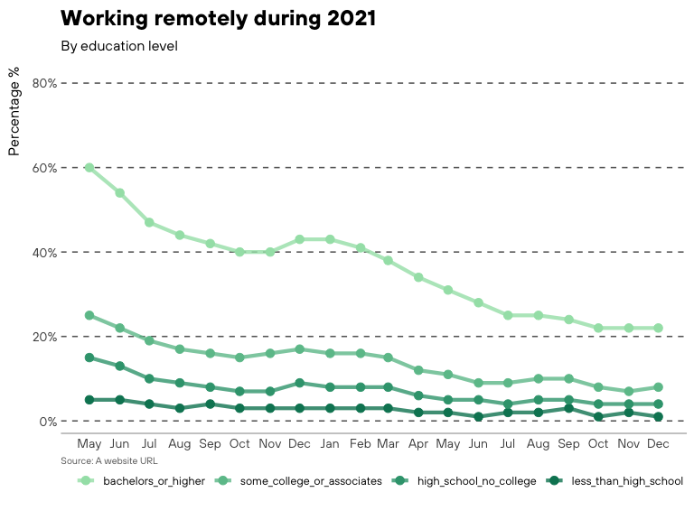

The goal of cori.charts is to make the process of creating publication-ready graphics and charts at the Center for Rural Innovation as easy as possible. Check out the guidelines, and then get started.
Installation
You can install the development version of cori.charts from GitHub with:
# install.packages("devtools")
devtools::install_github("ruralinnovation/cori.charts")Example
This is a basic example which shows the application of the CORI theme:
library(ggplot2)
library(cori.charts)
theme_set(theme_cori())
update_cori_geom_defaults()
data("cori_education")
ggplot(cori_education,
aes(date, percent_working_remotely, color = education)) +
geom_line() +
geom_point() +
scale_color_cori(guide = guide_legend(reverse = TRUE)) +
scale_y_continuous(labels = scales::percent) +
labs(title = "Proportion working remotely",
subtitle = "By education level")
Check out the vignette for a cookbook of CORI-themed plots!
Contributing
Please note that the cori.charts project is released with a Contributor Code of Conduct. By contributing to this project, you agree to abide by its terms.